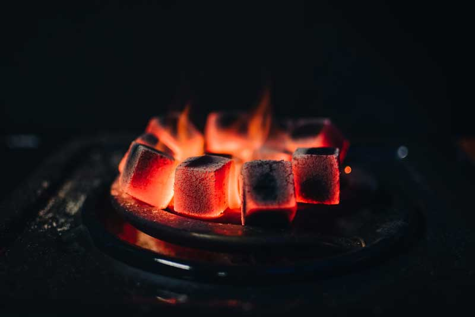

Five Things To Know About Briquettes and Sustainable Bioenergy in Africa
Tuesday, 22 February 2022

The majority of people in Africa depend on wood for cooking and heating energy due to its affordability, accessibility and versatility for meeting people is needs. But while it offers a low cost means for cooking, heating homes and powering industrial activities, a sizable proportion of it is obtained unsustainably, leading to deforestation and land degradation. Moreover, wood is often burned in inefficient appliances, causing emissions that have negative health and environmental impacts.
Fuel briquettes could help alleviate these challenges.
With wood-dependent populations growing in the region, while access to wood declines, briquettes offer a practical solution to supplement the use of wood as fuel. They are produced by compressing biomass residues like charcoal dust, sawdust, other wood remnants or agricultural byproducts into a solid unit that is used like charcoal or firewood. If the base materials do not hold together well, a binding substance such as soil, clay or starch is added. For use in the home, briquettes made from carbonized biomass are preferred, while non-carbonized briquettes are mostly used for industrial purposes.
Briquettes are more sustainable and more energy-efficient and could reduce the pressure on forests and lower pollution levels in urban areas, that is, if more people start using them. For example, in Nairobis informal settlement of Kibera, one of Africas largest slums, research found that use of slow burning charcoal dust and soil briquettes reduced household cooking energy expenditure by 70 percent if families produced their own, and 30 percent if they purchased briquettes from other sources.
Following a recent webinar on briquettes organized by The Charcoal Project, here are five takeaways on this emerging fuel that could make a major impact.
1) Briquettes offer an opportunity for small enterprises
The production and sale of briquettes offers major income opportunities for entrepreneurs and participants in the supply chain. There is huge potential in the cooking and heating fuel market in Africa, and it is not difficult to establish a briquette production operation. In addition, the competition is fragmented and there are no major, branded briquette businesses that have cornered the market, said Sylvia Herzog, director of The Charcoal Project, a nonprofit focused on sustainable biomass solutions.
The small businesses in Kenya and Uganda that have ventured into the market are focusing on the various energy needs of chicken hatcheries, rural households, tourist camps and restaurants, and the lower and middle classes in urban areas.
For example, Kenya is Eversave Briquettes produces 10 tonnes a month of charcoal briquettes made from charcoal dust collected from trading sites mixed with gum arabic. When charcoal dust is in short supply, they make it from carbonized macadamia nut shells. Selling for 25 to 30 KES (USD 0.25-0.30) per kg, the woman-led enterprise has a 20 to 30 percent profit margin. Nairobi-based company Chardust salvages charcoal dust from the city charcoal traders, producing briquettes of various shapes and sizes for different purposes, selling roughly 200 tonnes a month to local markets.
Many examples like this exist in sub-Saharan Africa. But there is room for many more opportunities.
2) Briquettes can help re-purpose waste
Briquettes fit nicely into circular bioeconomy approaches that aim to reduce waste and spur more sustainable bioresources and market-based practices, while sustaining rural-urban linkages.
The Circular Bioeconomy Transformative Partnership Platform of the Center for International Forestry Research (CIFOR) and World Agroforestry (ICRAF) is working on the subject in relation to forests and the wood use. A circular bioeconomy approach is also being implemented in the refugee context in Africa by ICRAF and partner, supported by the Federal Ministry for Economic Cooperation and Development (BMZ) and the CGIAR Water, Land and Ecosystems research program (WLE).
In Cameroon, CIFOR supports Kemit Ecology, a start-up enterprise that transforms household waste such as plantain peels and maize leaves into ecological briquettes, contributing to urban waste management in the city of Douala.
3) Briquettes offer multiple ecological benefits
The use of briquettes also has the potential to preserve forests. In long-term studies undertaken at Kenya Kasigau Corridor, a conservation dryland landscape of about 200,000 ha, research led by Wildlife Works in collaboration with the National Museums of Kenya and ICRAF is showing that tree regeneration could occur alongside biodiversity protection and charcoal briquette production from tree prunings in the area, since using prunings eliminates the need to cut down trees. Communities along the corridor are developing similar briquette and conservation enterprises, including EcoCharcoal, which works with The Charcoal Project.
The techniques used in the natural regeneration of vegetation and improved carbonization processes are also being applied in many areas under CIFOR-ICRAF Governing Multifunctional Landscapes project, which works in Kenya, Zambia, Cameroon and the Democratic Republic of Congo and is funded by the European Union.
Kings Biofuels in Kenya produces over 200 tonnes of sawdust briquettes per month and has an agreement with the Kenya Tea Development Authority (KTDA). This innovation could save millions of trees, as firewood is used as heat to dry tea. The non-carbonized briquettes produced by Kings Biofuels are used in other industries such paint and carton production.
4) Briquette production can be profitable
Briquette making requires machinery, which is easy to obtain but is costly. But once the business is established, there is profit to be made. According to Matthew Owen of Chardust, using pre-carbonized waste helps save, as carbonizing is costly. He noted that there is great business promise with a focus on quality (by sieving and sorting for maximum purity) and targeted, niche marketing.
On the flip side, if people with little income are used to collecting free wood, there is little incentive to pay for briquettes. However, firewood resources are dwindling and becoming harder to access, and rural households are increasingly starting to pay for fuel. In a recent national survey in Kenya, 42 percent of rural households were found to use charcoal for fuel compared to 34 percent in 2002, indicating that a shift has occurred, which could signal potential for another shift to briquettes.
5) Public awareness of the advantages of briquettes is vital
A solution to many of the challenges facing briquettes entering the market and becoming mainstream is in education, for consumers, for those wanting to enter into business and for institutions or investors looking to finance cleaner energy work.
Dorothy Auwor Otieno of Kenya Nyalore Impact noted that behavior change takes time, and that health or environmental arguments for replacing wood and charcoal with briquettes would not convince the communities she works with to switch. Multiple factors including personal preferences affect people choices, so getting briquettes into household kitchens could take a bit more time.
But growing urbanization leads to growing demand for biomass energy. With more businesses in the briquette marketplace that are supported with effective value chains, alongside education and effective communication, this cleaner energy option has the potential to improve human wellbeing and create more sustainable environments where people need it the most.
It is important to note that a complete switch to briquettes in the near future may not be a feasible goal, as raw materials are limited. However a substantial reduction in the consumption of firewood, charcoal and kerosene for domestic use and furnace oil in industries, and the use of electricity and charcoal in keeping chicks warm in chicken hatcheries, which are a big buyer of charcoal, would go a long way to improving both human wellbeing and the environment.